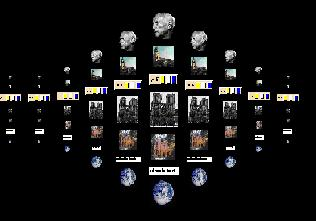

|
|
the ubit toolkit eric lecolinet enst | 19 |

b = ubutton( usrange(-3,-1) / ustr("abcde")
+ usrange(0, 3) / uima("whatever.jpg")
+ usrange(4, 99) / ufilebox( uscale(-2) + ...)
);
UScale sc = -1;
x = udialog(sc + b);